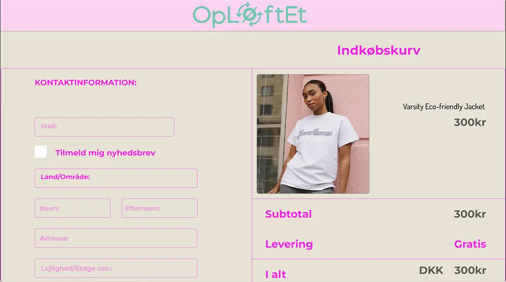

GRUNDLÆGGENDE UX
Grundlæggende forståelse af UX’erens rolle, og teorien bag ved - herunder de designkonventioner UX’eren følger.
På temaet dykkede vi ned i forskellige test: Desk research, observation, interview, survey og hvordan vi behandler de indsamlede data fra test og hvilke indsigter de giver os.
Vi arbejdede med konceptudvikling baseret på en udleveret ramme.
Vi benyttede sketching med udgangspunkt i Googles 5 days sprint. Her stiftede vi bla. bekendtskab
med
lightning demos og
crazy 8 og skulle ud fra dette komme med en sketching solution.
På temaet gennemgik vi fotostil og billedbehandling lærte om principperne om copy og microcopy.
Til at designe prototypen, moodboard og style tile benyttede vi Adobe XD.
Vi gennemgik på temaet teorien og forståelsen bag forskellige test og benyttede five-act og
tænke-højt
test
da vi
testede vores prototype.
Vi sluttede temaet af med et Pitch af vores prototypeløsning og feedback fra underviser og
medstuderende.
Sketching & Prototype
Crazy 8'

Her ses mine udkast til opsætning af site efter øvelsen med crazy 8
Sketching

Sketching af forskellige features jeg gerne ville have som en del af min løsning på sitet
Papirsprototype

Papirsprototype på hvordan mit site skulle sættes op, samt hvilke features det havde. Del af design sprint, som her også handlede om heat map, artmuseum, speed critique og Supervote.
Prototype

Efter øvelse med papirsprototype, blev dette mit første bud på prototype i adobe XD
Design proces & Test
Moodboard

Mit moodboard fra adobe XD. Med adjektiver som: upcycling made fun, colourful og old/new
Styletile

Mit styletile med beslutning omkring farver og fonte, samt ikoner
Desk research

Eksempel på test: Indsigter fra Desk research, med udgangspunkt i mit koncept omkring upcycling af tøj.
Survey

Eksempel på test: Indsigter fra survey angående købsadfærd når det handler om at købe brugt.
Solution & Pitch
Landingpage

Solution på landingpage efter five-act test
Shop

Check out section fra solution
Shop
Billede af check out funktion fra solution.
Pitch af løsning

Eksempel fra powerpoint pitch af min løsning
Powerpoint

Eksempel fra powerpoint pitch af min løsning